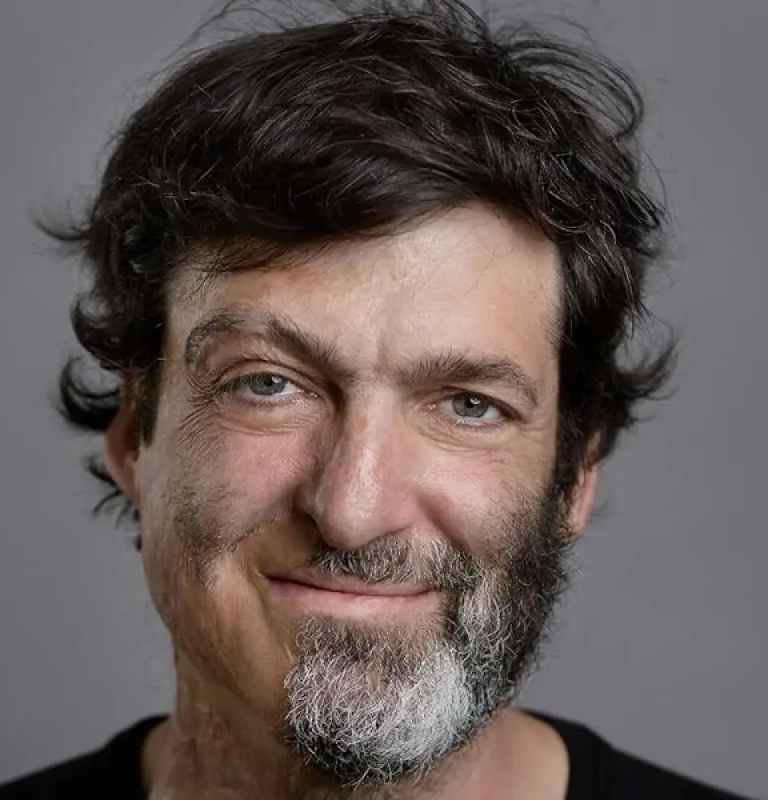

We are here to help each other
The Life we
should live
I'm Dan Ariely and I'm researching the end of life. The last chapter is the most under-utilized chapter of our life and we can do better
Dan's Reflection
The life we should live
What is this website for?
Over the last few years, I became interested in the last chapter of life. This is the chapter between the time when people get a terminal illness diagnosis, and the end of life. In the western world this chapter is relatively long, a bit longer than five years on average, and it has become clear to me that it’s one of the most under-utilized chapters of our life. What do I mean by under-utilized?
I mean that it’s a chapter were the difference between the quality of life that people experience compared to what they could experience is the largest – basically the largest missed opportunity. And I also decided that we need to do something about it. What exactly can be done I’m not sure yet, and this is where this project is headed. My plan is to start by having broad discussions about the last chapter of our lives, get some insights and data about what is going wrong, mostly focus on what can be done better, and hopefully come up with a list of tangible things that could be improved.
And I have one more hope, which is that having a better understanding about the mistakes and improvements that we need to make in the last chapter of life will also give us some hints about how to live better in our other chapters.